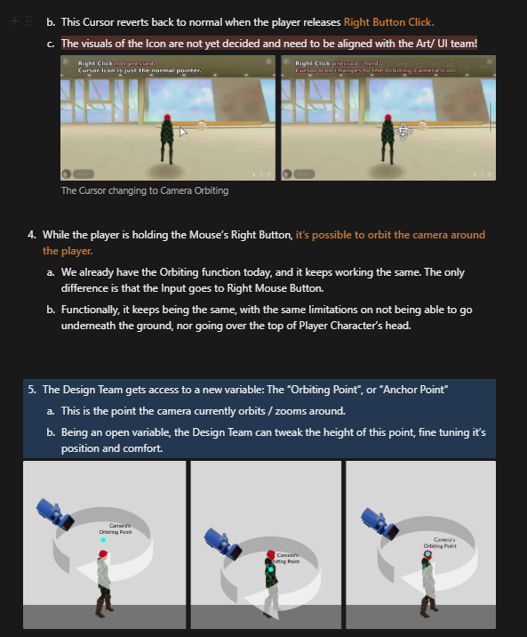
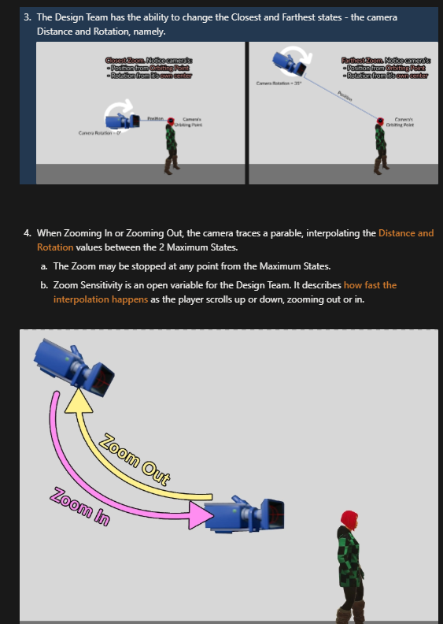
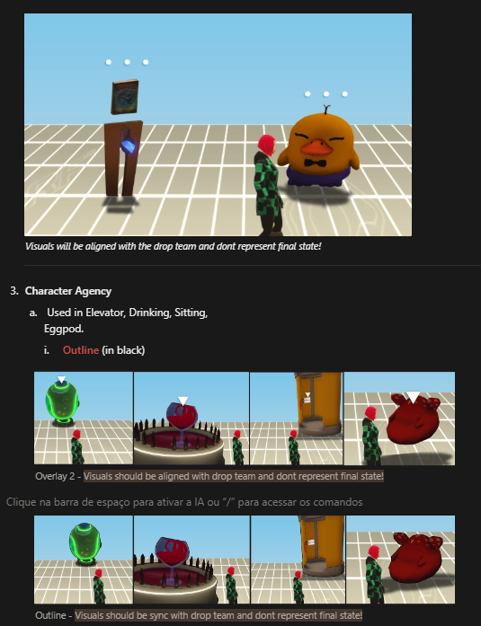
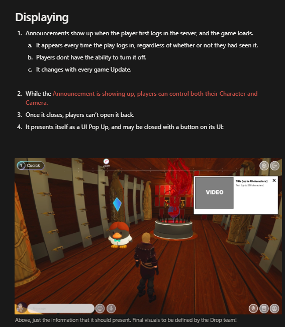
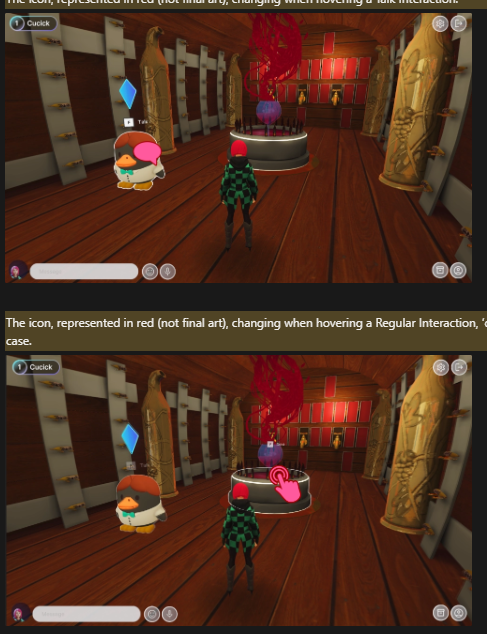

Highstreet Market
Website LinkMy responsabilities in this very delicate project (as it dealt with player's real money!) were the following:
Highstreet Campus
Game Designer
Released December, 2023
- Technical Game Design: Designing and developing an analytics system, together with all it's events, for hundreds of players
- Of course, afterwards, we had to process the data and change the game accordingly
- Technical Game Design: Designing the tool for quick, completely modular NPC making and dialogue implementing
- Creating Seasonal Events as content designer - which meant places, changes in scenery, NPCs and interactions
- Improvement design for the old camera system; pointer system; screen interaction system
- Creating dialogue and designs for NPCs, using the tools I've designed and developed
- A little bit of QA
- Compiling and presenting data for a post-mortem, which guided the next steps of the whole studio.
Design Processes
Below, some diagrams and designs made for the deliverables, for the game design nerds among you:


Diagrams I've attached to the GDD on the new camera system.



Diagrams I've attached to the GDD on the new interactions systems.
- In this project, I had the chance of having as a lead the designer, writer and friend Artur Costa, who lead the project for years before I've entered and put it in it's state.